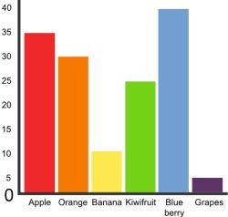

Teaching Point:
Today we will learn how to turn data into graphs in Microsoft Excel.
Graphs in Excel
Once we have all of the data collected from our surveys, we can see very quickly and easily what choices were most popular and what choies were least. Does anyone want to share any examples?
Another thing we can do to look at our data, is turn it into graphs. We can do this very easily as long as all of our data is in the right cells.
- First highlight the cells that have the choices, and the cells that have the answers in them.
- Next choose Charts from the choices on the top of the page.
- Finally, choose your favorite chart. The best charts for comparing data are Column, Bar, and Pie. Play around with it until you find one that works for you.
Today's Assignment
Turn your data into charts. Answer the questions on the Google Form below.
Extension Activity
Change the colors of your chart to make it look the way that you want.
Back to School Portal